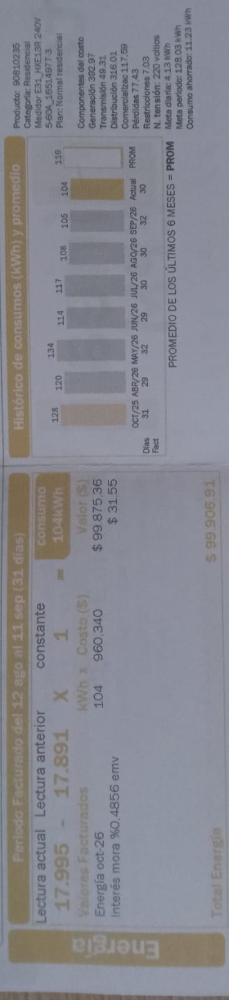

Consumo por mes
| Mes | Dias facturados | kWh | Costo de kWh |
|---|---|---|---|
| Octubre 2025 | 31 | 128 | 815,46 |
| Abril | 29 | 120 | 800,41 |
| Mayo | 32 | 134 | 812,89 |
| Junio | 29 | 114 | 838,06 |
| Julio | 30 | 117 | 858,14 |
| Agosto | 30 | 108 | 896,55 |
| Septiembre | 32 | 105 | 895,23 |
| Actual | 30 | 104 | 960,88 |
Factura:

Comparación
Para empezar, en la tabla de equipos registrados, se puede evidenciar un total de 41,71 kWh por semana, sin embargo, esto puede variar en mayor medida por otros aparatos que no fueron registrados, sin embargo, el de mayor consumo electrico es el Televisor, con un consumo de 5,5 kWh, este aparato es usado de forma irregular (dias donde se usa más que otros). En los meses donde menos se consumió según la tabla de facturas (Agosto-Hoy), fueron meses donde hubieron más actividades por fuera de casa. Se puede predecir que para los meses Noviembre y Diciembre, se aumentará el consumo de electricidad por festividades y por un itinerario menos ocupado.
Recomendaciones:
- Disminuir las horas de consumo de televisión y desconectarlo de noche
- Desconectar la nevera durante las noches y reconectarla al levantarse
- Apagar las luces que no se usan (y dispositivos no registrados)